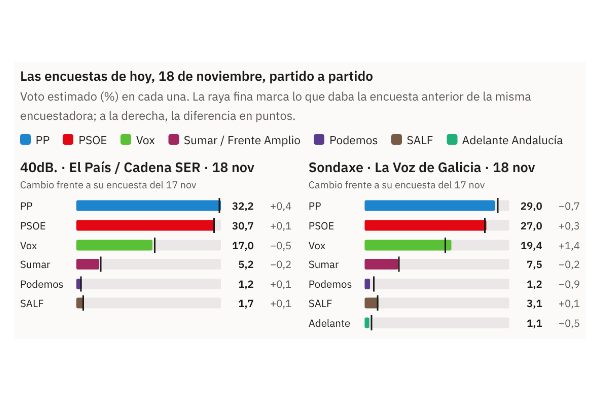

Actualidad · Frente Amplio · España
Elecciones generales: el modelo de encuestas da escaño al Frente Amplio en 5 de sus 17 provincias
En otras 5 se queda a las puertas. En toda España, el modelo le da 12 diputados; Sumar sacó 31 en 2023, con Podemos dentro.
Por Nacho G. del Álamo · · Actualizado el
Cada párrafo lleva una etiqueta: dato (cifra comprobable con las fuentes), patrón (relación que se repite, sin afirmar la causa), hipótesis (explicación posible, sin dos fuentes independientes) o contexto (hechos y declaraciones publicados por otros, enlazados). Cómo verificamos
ContextoEl Frente Amplio aspira a sacar diputados en 17 provincias en las elecciones generales del 29N, según publicó Público el 18 de noviembre: A Coruña, Alicante, Asturias, Baleares, Barcelona, Bizkaia, Córdoba, Granada, Las Palmas, Madrid, Málaga, Navarra, Pontevedra, Santa Cruz de Tenerife, Sevilla, Tarragona y Zaragoza. Son las 16 en las que, según elDiario.es, centra su campaña para pelear por el último escaño, más Bizkaia. «En esas provincias, en la mayoría de ellas, el escaño que se va a jugar el Frente Amplio se lo juega con el PP y con Vox», dijo el 9 de noviembre su portavoz de campaña, Pablo Bustinduy, según elDiario.es. En la Comunidad Valenciana y en Canarias se presenta en coalición con Podemos, Compromís y Nueva Canarias, recuerda Público.
DatoEl modelo de encuestas de mapaelectoral.es le da escaño en 5 de esas 17 en su reparto central: Madrid (3), Barcelona (2), Alicante (1), Las Palmas (1) y Sevilla (1), 8 diputados en total. En 2023, Sumar sacó 25 en esas mismas 17 provincias.
DatoEn otras 5, Santa Cruz de Tenerife, Asturias, Córdoba, Baleares y Málaga, se queda a las puertas: el reparto central no le da escaño, pero sí la horquilla del 80 % del modelo. En las 7 restantes (Zaragoza, Navarra, Granada, Bizkaia, Pontevedra, Tarragona y A Coruña), ni siquiera la horquilla le da diputado, aunque Sumar lo sacó en 2023 en 6 de ellas.
Ver la tabla
| Provincia | 2023 | Modelo | Horquilla | Voto (%) |
|---|---|---|---|---|
| Madrid | 6 | 3 | 2–4 | 8,1 |
| Barcelona | 5 | 2 | 1–3 | 7,2 |
| Alicante | 1 | 1 | 1–2 | 11,1 |
| Las Palmas | 1 | 1 | 0–1 | 9,3 |
| Sevilla | 2 | 1 | 0–1 | 7,3 |
| Santa Cruz de Tenerife | 0 | 0 | 0–1 | 8,7 |
| Asturias | 1 | 0 | 0–1 | 8,3 |
| Córdoba | 1 | 0 | 0–1 | 8,2 |
| Baleares | 1 | 0 | 0–1 | 7,5 |
| Málaga | 1 | 0 | 0–1 | 6,2 |
| Zaragoza | 1 | 0 | 0–0 | 7,8 |
| Navarra | 0 | 0 | 0–0 | 6,7 |
| Granada | 1 | 0 | 0–0 | 6,0 |
| Bizkaia | 1 | 0 | 0–0 | 5,4 |
| Pontevedra | 1 | 0 | 0–0 | 5,1 |
| Tarragona | 1 | 0 | 0–0 | 4,8 |
| A Coruña | 1 | 0 | 0–0 | 4,2 |
DatoFuera de su lista, el modelo le da escaño en Valencia (2). En toda España, el hemiciclo de /encuestas/ le da 12 diputados, frente a los 31 de Sumar en 2023, con Podemos dentro. El hemiciclo es la media de escaños de todas las simulaciones del modelo, así que cuenta también los escaños que gana solo en parte de ellas, como los de las provincias en las que se queda a las puertas; sumando el reparto central de cada provincia salen 10.
ContextoEl modelo mezcla encuestas nacionales y resultados anteriores para estimar cada provincia, y en las que reparten pocos escaños un punto arriba o abajo cambia el último diputado. Por eso las horquillas son anchas: son las provincias en las que una campaña puede mover un escaño.
Preguntas frecuentes
¿En qué provincias aspira a sacar diputados el Frente Amplio?
En 17, según Público: A Coruña, Alicante, Asturias, Baleares, Barcelona, Bizkaia, Córdoba, Granada, Las Palmas, Madrid, Málaga, Navarra, Pontevedra, Santa Cruz de Tenerife, Sevilla, Tarragona y Zaragoza.
¿Cuántos diputados le dan las encuestas al Frente Amplio?
El hemiciclo del modelo de mapaelectoral.es le da 12 en toda España. Sumar, con Podemos dentro, sacó 31 en 2023.
Las encuestas de las elecciones generales del 29N · Las provincias en el filo
Método y fuentes
- Qué se compara
- Las 17 provincias en las que el Frente Amplio aspira a sacar diputados, según Público, con los escaños que le da el modelo de encuestas de mapaelectoral.es en cada una (reparto central y horquilla del 80 %) y los que sacó Sumar en 2023.
- Límites
- Es un modelo: mezcla encuestas nacionales y resultados anteriores para estimar cada provincia, y en las que reparten pocos escaños un punto cambia el último diputado. El reparto central de cada provincia es la mediana de las simulaciones; el hemiciclo de /encuestas/ es la media, por eso la suma de las provincias (10) no coincide con su total (12). Sumar en 2023 incluía a Podemos, que en 2026 se presenta por separado.
- Cómo se calcula
- Reparto central: medianas provinciales del modelo ajustadas para que sumen los escaños de cada provincia (el mismo que la página de cada provincia en /encuestas/). Horquilla: percentiles 10 y 90 de las simulaciones. Script: frente_amplio_provincias.py, en actualidad/src/resumenes. Cifras reproducibles con los scripts del expediente de la pieza. Metodología de Actualidad · Metodología del Atlas
- Fuentes
- Público, Frente Amplio se erige como voto clave en 17 provincias (directo, 18-11-2026)
- elDiario.es, el Frente Amplio centrará su campaña en 16 provincias para pelear por el último escaño (9-11-2026)
- Ministerio del Interior, resultados electorales por mesa (Infoelectoral), vía pollspaindata. Sin voto exterior (CERA)
- Mapa Electoral, encuestas de las elecciones generales 2026
- Mapa Electoral, método del modelo de escaños
- Autoría
- Nacho G. del Álamo
- Revisión de datos y texto
- Nacho G. del Álamo, 19 de noviembre de 2026
- Publicado · actualizado
- 19 de noviembre de 2026 · 19 de noviembre de 2026, a las 12.00
- Correcciones
- Ninguna.
Serie «Camino al 29N»: 163 piezas
- Los once municipios que visitan los candidatos el primer día de campaña, fuera de Madrid y Barcelona, cambiaron de ganador entre 2019 y 2023
- Dos de los cuatro del debate de laSexta no se presentan el 29N: ni Cuerpo ni Bustinduy están en ninguna lista
- El CIS da al PSOE más escaños que la media de encuestas en 13 provincias y menos en ninguna; en Madrid, entre 12 y 14 frente a 10
- A dos semanas del 29N, 14 de las 16 encuestas con escaños dan mayoría absoluta a PP y Vox; solo el CIS y SW Demoscopia ponen por delante al PSOE
- De los 25 convocados de De la Fuente nacidos en España, 15 nacieron donde ganó el PSOE en 2023 y 8 donde ganó el PP; en Puente Genil, el PP ganó por 31 votos
- Vox, primero en el CIS entre los de 18 a 24 años: la generación de 2008 estrena voto en unas generales
- El PSOE sube en siete de las nueve encuestas de la primera semana de campaña; el PP baja en cuatro y sube en otras cuatro
- Feijóo hace campaña con UPN en Pamplona, donde el PSOE ganó 77 de las 151 secciones en 2023; con UPN y PP sumados, se habría quedado en 49
- Al PP le faltaron 9.793 votos en 2023 para recuperar un diputado en Gipuzkoa; Feijóo arropa hoy a su candidato, atacado en Hernani
- En 2023, las últimas encuestas daban al PP 5,7 puntos de ventaja sobre el PSOE y ganó por 1,4: si hoy fallaran igual, el PSOE iría primero
- Si la abstención fuera un partido, en 2023 habría quedado por delante del ganador en más de la mitad de las grandes ciudades y en la mitad de las secciones de España
- Voto por correo para las elecciones generales del 29N: el plazo para pedirlo acaba el jueves 19; en 2023, una de cada tres solicitudes llegó en las dos últimas semanas
- Encuestas y debate: tras el cara a cara de 2023, 10 de 14 encuestadoras ampliaron la ventaja del PP; trece días después ganó por 1,4 puntos
- Elecciones generales: una de cada tres secciones cambió de ganador entre 2019 y 2023
- Elecciones generales: las encuestas dan al PSOE entre el 25,5 y el 33,3 %
- Elecciones generales: Vox baja al 17 % en la encuesta diaria de El País
- Encuestas elecciones generales 2026, hoy 18 de noviembre: el PSOE, a dos puntos o menos del PP
- Encuestas elecciones generales 2026, hoy 19 de noviembre: Sondaxe deja al PSOE a 0,7 puntos del PP
- Debate Sánchez Feijóo: hora, dónde verlo y quién gana el cara a cara
- Estás aquíElecciones generales: el modelo de encuestas da escaño al Frente Amplio en 5 de sus 17 provincias
- Ver las 163 piezas de la serie
Más datos: elecciones generales del 29N de 2026: fecha y escaños por provincia · resultados de las elecciones generales 2026 (29N) y los de 2023 · dónde y cómo votar el 29N: colegio electoral, voto por correo y plazos.
Sigue leyendo
 El debateDebate Sánchez Feijóo: hora, dónde verlo y quién gana el cara a cara
El debateDebate Sánchez Feijóo: hora, dónde verlo y quién gana el cara a cara Encuestas de hoyEncuestas elecciones generales 2026, hoy 19 de noviembre: Sondaxe deja al PSOE a 0,7 puntos del PP
Encuestas de hoyEncuestas elecciones generales 2026, hoy 19 de noviembre: Sondaxe deja al PSOE a 0,7 puntos del PP
Encuestas de hoyEncuestas elecciones generales 2026, hoy 18 de noviembre: el PSOE, a dos puntos o menos del PP La encuesta de El PaísElecciones generales: Vox baja al 17 % en la encuesta diaria de El País
La encuesta de El PaísElecciones generales: Vox baja al 17 % en la encuesta diaria de El País Lo que las encuestas no dicenElecciones generales: las encuestas dan al PSOE entre el 25,5 y el 33,3 %
Lo que las encuestas no dicenElecciones generales: las encuestas dan al PSOE entre el 25,5 y el 33,3 % El mapa que nadie te enseñaElecciones generales: una de cada tres secciones cambió de ganador entre 2019 y 2023
El mapa que nadie te enseñaElecciones generales: una de cada tres secciones cambió de ganador entre 2019 y 2023